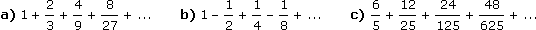
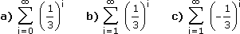

Folgen - Aufgaben 2
1.
Bestimme für die Folge (a
n) alle Indizes n, für die gilt: |a
n – a| < ε
a) a
n =
, a = 5, ε =
b) a
n =
, a = 2, ε =
c) a
n =
, a = 1, ε =
d) a
n =
, a = 3, ε =
2.
Bestimme den Grenzwert der Folge (a
n) mit Hilfe der Grenzwertsätze:
a) a
n =
b) a
n =
– n
c) a
n =
3.
Bestimme das Ergebnis (= den Grenzwert) der folgenden Reihen:

4.
Bestimme das Ergebnis (= den Grenzwert) der folgenden Reihen:

5.
Achilles und die Schildkröte machen einen Wettlauf. Achilles ist 10-mal so schnell wie die Schildkröte, gibt ihr aber die Strecke x0 als Vorsprung. In der Zeit, in der Achilles den Vorsprung der Schildkröte durchläuft, hat sich diese bereits einen neuen erlaufen usw. Damit wollte der Philosoph Zenon suggerieren, dass die Schildkröte immer einen Vorsprung hat. Bestimme die Strecke, die Achilles laufen muss, um die Schildkröte einzuholen, a) durch Aufsummieren der Vorsprünge, b) durch eine andere Überlegung.
6.
Zwei Schenkel schließen einen Winkel von 20° ein. Eine Zickzacklinie startet auf dem ersten Schenkel, 15 cm vom Scheitelpunkt entfernt, und läuft auf kürzestem Weg zum zweiten Schenkel, von dort wieder auf kürzestem Weg zum ersten usw. Wie lang ist die Zickzacklinie?
Einem gleichschenkligen Dreieck mit Basis 6 cm und Höhe 9 cm wird ein Quadrat so eingeschrieben, dass eine Seite auf der Basis liegt. Über dem Quadrat wird ein weiteres genauso eingeschrieben usw. Wie groß ist die Summe aller Quadratflächen?
8.
Einem Quadrat mit Seitenlänge 18 cm wird ein Kreis eingeschrieben, in den Ecken zwischen dem ersten Kreis und den Quadratseiten 4 weitere Kreise, zwischen diesen und den Quadratseiten wieder 4 Kreise usw. Wie groß ist die Summe aller Kreisflächen?
Ergebnisse:
1. a) L = {13, 14, 15, ... } b) L = {2, 8, 9, 10, ... } c) L = {28, 29, 30, ... }
d) L = {599, 600, 601, ... }
2. a) 3/2 b) –2 c) 0
3. a) 3 b) 2/3 c) 2
4. a) 3/2 b) 1/2 c) –1/4
5. 1,1x0
6. 85,07 cm
7. 20,25 cm2
8. 285,34 cm2